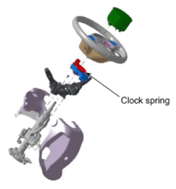

LEMON Manuals
: Even more car manuals for everyone: 1960-2025
Home
>>
Hyundai
>>
2022
>>
Elantra N Line, Standard Trans
>>
Repair and Diagnosis
>>
Restraints
>>
Air Bag, SRS
>>
Airbag Modules And Clock Spring (Except HEV)
>>
Driver Airbag (DAB) Module & Clock Spring
>>
Repair procedures
>>
Inspection
>>
Clock Spring
Clock Spring
If any improper parts are found during inspection, replace the clock spring with a new one.
Check connectors and protective tube for damage, and terminals for deformities.

Courtesy of HYUNDAI MOTOR AMERICA
Courtesy of HYUNDAI MOTOR AMERICA